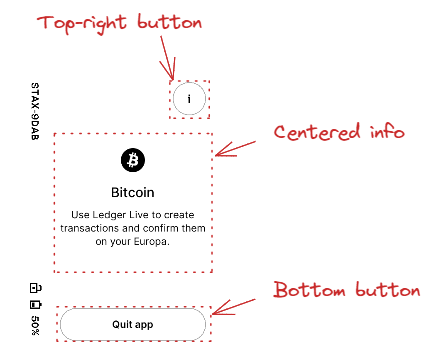
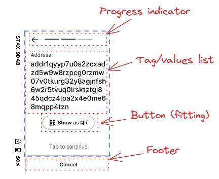
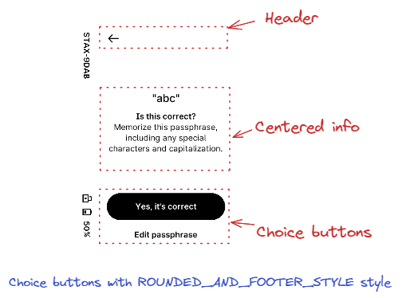
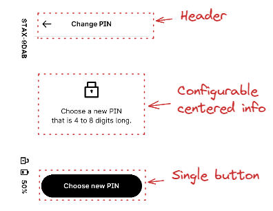
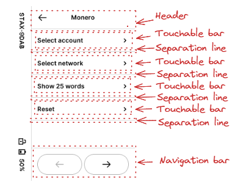
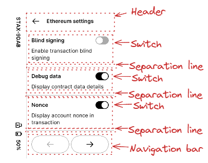
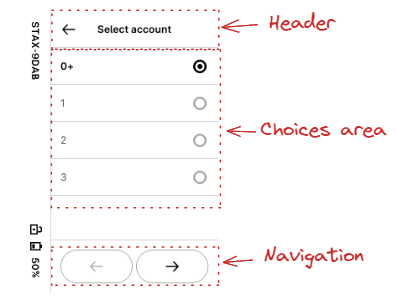
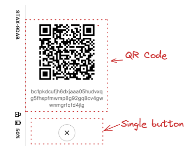
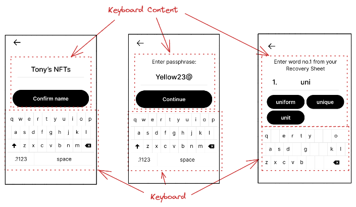
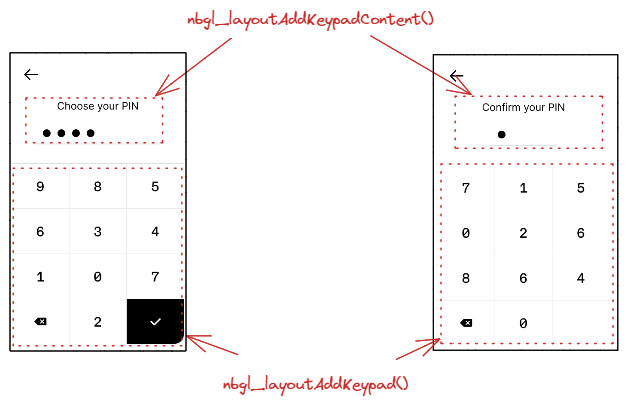

Introduction
This chapter describes briefly the mid level API of Advanced BOLOS Graphic Library.
This layer offers a simplified view of a screen page, using complex (aggregated) objects, like a radio buttons choice or touchable areas.
A full description of each functions/types can be found in this document
Concepts
This layer uses the low-level API described in Advanced BOLOS GL API, but all graphic objects are hidden, in favor to abstract complex objects like a radio buttons choice or touchable areas.
Moreover, positions of objects in the page are mostly hidden and automatic.
Example 1

In this example, 3 "objects" are used and added to the page with dedicated APIs:
- A top-right button with a customizable icon
- A centered information area with an icon, a main text and possibly a subsidiary text under it.
- A centered bottom button with a customizable icon
Example 2

In this more complex example, a "tapable" container is used for the whole screen, except the footer area and the progress indicator.
In the "tapable" container, 2 objects are drawn, a single pair of tag/value, and a "more" button to execute an action.
Common operations
Getting a new layout
The first operation is always to get a new layout, with the desired parameters:
- An action callback used for all controls of the page
- A text and token to be used for action callback if a potential "tapable" container is used in page
- A boolean indicated whether the page is modal or not (first or second plane)
- A potential ticker configuration if a ticker is required for the page
The function to actually create the layout is nbgl_layoutGet()
For example 1:
For example 2:
Drawing a populated layout
Once defined and populated, all objects can be drawn in framebuffer with a simple call to nbgl_layoutDraw().
Populating a layout
Once the layout is defined and retrieved with nbgl_layoutGet(), the page can be filled with complex objects.
If a "tapable" container is used, most objects will be added in it, except the ones on top (progress indicator or top-right button) or on bottom (navigation bar or bottom button). Otherwise objects are all added in the whole page.
Top-right button
This object is made of a single round button, on top right of the screen.
The only properties of this object are
- The 32px/32px icon to use in it
- A token used with the action callback when the button is touched
The API to insert such an object is nbgl_layoutAddTopRightButton()
- Warning
- This object is incompatible with Progress indicator, for example
Bottom centered button
This object is made of a single round button, on middle bottom of the screen.
The only properties of this object are:
- The 32px/32px icon to use in it
- A token used with the action callback when the button is touched
The API to insert such an object is nbgl_layoutAddBottomButton().
Optionally, a thin horizontal separation can be drawn on top of the button, if separationLine parameter of nbgl_layoutAddBottomButton() is true.
- Warning
- This object is incompatible with navigation bar or footer, for example
Footer section

This object acts as a full width text area at the bottom of the screen.
The only properties of this object are:
- The text to be drawn for the footer
- A token used with the action callback when the footer is touched
The API to insert such an object is nbgl_layoutAddFooter().
A thin horizontal separation is drawn on top of the text area.
- Warning
- This object is incompatible with navigation bar or bottom button, for example
Split footer section

This object acts as a two horizontally adjacent touchable text areas at the bottom of the screen.
The properties of this object are:
- The text to be drawn on left part of footer
- A token used with the action callback when the left part of footer is touched
- The text to be drawn on right part of footer
- A token used with the action callback when the right part of footer is touched
The API to insert such an object is nbgl_layoutAddSplitFooter().
A thin horizontal separation is drawn on top of the text areas. A thin vertical separation is drawn between both text areas.
- Warning
- This object is incompatible with navigation bar or bottom button, for example
Centered info area
This object is made of:
- An optional icon
- An optional main text under the icon
- An optional sub text under the main text
The whole object is centered horizontally in the page
It can be either centered vertically or put on top of the page.
The API to insert such an object is nbgl_layoutAddCenteredInfo(), using nbgl_layoutCenteredInfo_t structure
The colors and fonts for the texts depends of the style field used in nbgl_layoutCenteredInfo_t.
- if LARGE_CASE_INFO, main text is in BLACK and large case (INTER 32px), subText in BLACK in INTER 24px
- if NORMAL_INFO, icon in black and main text in INTER 24px in BLACK under it, subText in INTER 24px in DARK_GRAY under it
Choice buttons


This object is made of 2 buttons, aligned vertically, each containing a text.
They are put at the bottom of the main container, on top of a potential navigation bar or bottom button.
Regarding colors, Top-button (index 0 in callback) is painted in BLACK and is on top of Bottom-buttom (index 1 in callback)
If the style field is ROUNDED_AND_FOOTER_STYLE, Bottom-button is painted in WHITE, without border.
If the style field is BOTH_ROUNDED_STYLE, Bottom-button is painted in WHITE, with border.
The API to insert such an object is nbgl_layoutAddChoiceButtons(), with nbgl_layoutChoiceButtons_t structure
Single button

This object is made of a single button, in BLACK. The text and optional icon are in WHITE
This button occupies the full width of the screen, except if fittingContent field of nbgl_layoutButton_t is true, and is put at the bottom of the main container, on top of a potential navigation bar or bottom button.
The API to insert such an object is nbgl_layoutAddButton(), with nbgl_layoutButton_t structure.
Long-press button

This object is made of an area containing a progress-bar (empty at the initialization), a text describing the action, and a fake round BLACK button
The whole area is touchable and as long as touched, the progress-bar will be automatically updated. After 3s, the long-press button is considered as "touched", and the action callback is called with the given token.
This button occupies the full width of the screen and is put at the bottom of the main container, on top of a potential navigation bar or bottom button.
The API to insert such an object is nbgl_layoutAddLongPressButton(), with the button text and token as parameters.
Tag/value list

A touchable icon can also be added on right of value:

The parameters to draw such an item are:
- Array of tag/value pairs :
- Or a callback (if the array is NULL) to retrieve the pairs one by one
- A boolean to wrap or not value field on spaces
- A boolean to indicate whether to use a 24 px font for value field (only used when displaying details)
- A token that will be used as argument of the callback if icon in any tag/value pair is touched (index is the index of the pair in pairs[])
- The maximum number of lines of value field to display (if 0, not used)
This area is displayed in the main container, under the previously inserted complex object.
The API to insert such an object is nbgl_layoutAddTagValueList(), with nbgl_layoutTagValueList_t structure
Touchable bar

This horizontal bar object is made of:
- An optional icon on the left, in BLACK
- An optional text, in BLACK
- An optional icon on the right, in BLACK
Some extra fields in nbgl_layoutBar_t, enable to:
- center text horizontally instead of on the left
- gray-out the bar to deactivate it
This area is displayed in the main container, under the previously inserted complex object.
If leftIcon and rightIcon fields are NULL, the bar is considered as a title.
When touched, if not inactivated, the token provided in nbgl_layoutBar_t is used with the action callback. index parameter is not relevant.
The API to insert such an object is nbgl_layoutAddTouchableBar(), with nbgl_layoutBar_t structure
Switch

This object is made of:
- A mandatory text, in BLACK and bold, on the left
- An optional text, in BLACK, under the mandatory text
- A switch, at the given initial state, on the right
This area is displayed in the main container, under the previously inserted complex object.
When touched, if not inactivated, the token provided in nbgl_layoutSwitch_t is used with the action callback. index parameter meaning is 0 for inactive, 1 for active.
The API to insert such an object is nbgl_layoutAddSwitch(), with nbgl_layoutSwitch_t structure
Radio button choices

This object is made of a vertical list of nbChoices items made of:
- A mandatory text, in BLACK, on the left
- A radio button, on the right
One and only one button is active at the same time in a single object.
Each line of choice is separated from the previous one by a thin horizontal sepatation line.
The active button at start-up is given in initChoice field of nbgl_layoutRadioChoice_t.
This area is displayed in the main container, under the previously inserted complex object.
The API to insert such an object is nbgl_layoutAddRadioChoice(), with nbgl_layoutRadioChoice_t structure
Spinner

This object is a simple centered "Ledger" logo in LIGHT_GRAY, with one of the corner in BLACK, to emulate a spinner, with an explanation text under the spinner
The spinner "rotating" corner will automatically be updated every 800 ms.
The API to insert such an object is nbgl_layoutAddSpinner().
- Warning
- No other object shall be inserted beside this one.
Progress indicator
This object, drawned in top of the screen, is essentially made of a discrete page progress bar (slashes or digits). An optional "back" button, symbolized with a left arrow, can also be drawned on the left of the page progress.
The parameters to build this object are:
- The total number of pages
- The current page (from 0 to (total_nb_pages-1))
- A boolean to indicate whether to use a "back" button or not
- A token used with the action callback when the "back" button is touched
Digits are represented instead of slashes if the number of pages exceeds 10. In this case, instead of marking the active page as a slash in BLACK, the page indicator will indicate *"<current_page> of <total_nb_pages>"*
The API to insert such an object is nbgl_layoutAddProgressIndicator().
- Warning
- This object is incompatible with top-right button and page selector.
- This object is deprecated.
QR Code

This object, centered in the main container, is made of a dynamically drawned QR Code (not a picture) and description texts under it.
The parameters to build this object are:
- The URL corresponding to the address to draw in the QR Code
- The optional text to draw under the QR Code (in BLACK, 24px bold)
- The optional sub text to draw under the text (in BLACK, 24px regular)
The API to insert such an object is nbgl_layoutAddQRCode(), with nbgl_layoutQRCode_t structure as parameter.
- Warning
- This object is incompatible with top-right button and progress indicator.
Keyboard-related objects
Some rare screens require displaying a keyboard at the bottom of the page, to enter text.
The text to enter may be a generic string or a word (for example BIP39). In the first case, a simple confirmation button is also displayed in the screen. In the second case, usually suggestion buttons are displayed to avoid issues with unknown words and save time.
Here are some example of these pages in Bolos UX:

To build such screens, some dedicated APIs are necessary, which will be detailed in the sub-chapters.
Adding/Updating keyboard
This object, at the bottom of the main container (with a margin), proposes a Qwerty keyboard.
The parameters to configure this object are:
- The mode in which to start the keyboard (letters, digits or special characters)
- A boolean to indicate whether to display letters in upper or lower case
- A boolean to indicate whether to display only letters, with no space and no shift key to switch between modes
- A 32 bits mask used to invalidate (remove) some keys on the keyboard.
- A function called when an active key is pressed
The API to insert such an object is nbgl_layoutAddKeyboard(), with nbgl_layoutKbd_t structure as parameter.
This function returns a positive integer (if successful) to be used as an index in nbgl_layoutUpdateKeyboard() function, used to modify the mask of an existing keyboard.
- Note
- the 32 bits mask works like this:
- If mask[0] bit is 1, the 'q' key is invalid
- If mask[1] bit is 1, the 'w' key is invalid
- And so on in "qwertyuiopasdfghjklzxcvbnm" string.
- "space" key has index 29.
Adding/Updating Keyboard Content
This container object, which is a complement to a keyboard consists in:
- An optional title on top of the container
- A entered text area (one line)
- Either a single confirmation button or several suggestion buttons
The buttons are all with black background and white text.
The parameters to configure this object (nbgl_layoutKeyboardContent_t structure) are:
- The type of content (with suggestions or confirmation)
- The optional text for title (if NULL, no title)
- The entered text to display
- A boolean to indicate whether to display a number at the beginning of the line of the entered text
- A number to display at the beginning of the line of the entered text (if numbered is true)
- A boolean to indicate whether to display the entered text in gray or not.
- The token that will be used as argument of the callback when text is touched
- Either:
- The description of the suggestions buttons
- Or the description of the confirmation button
- The tune ID to play when any button is pressed
The API to insert such an object is nbgl_layoutAddKeyboardContent().
This function returns a positive integer if successful. This object can be modified with nbgl_layoutUpdateKeyboardContent()
Example 1

Here is the source code to display this first example:
Example 2

Here is the source code to display this second example (with simulated transitions):
Keypad-related objects
Some rare screens require displaying a keypad at the bottom of the page, to enter digits.
The digits to enter are usually a PIN code, so enter or to confirm.
Here are some example of these pages in Bolos UX:

To build such screens, some dedicated APIs are necessary, which will be detailed in the sub-chapters.
Adding/Updating keypad
This object, at the bottom of the main container (with a margin), proposes a regular keypad, with 10 digits, a backspace and a validate keys.
The only parameters to configure this object are:
- the callback associated with active keypad keys touch events. Only digit keys are active.
- a boolean to choose between shuffled and regular digits.
The API to insert such an object is nbgl_layoutAddKeypad().
This function returns a positive integer (if successful) to be used as an index in nbgl_layoutUpdateKeypad() function, used to modify the mask (active keys) of an existing keypad.
Adding/Updating keypad content
This object consists in:
- an optional title
- either:
- up to 12 discs (invisible or visible) corresponding to hidden entered/not entered digits.
- or up to 12 digits if not hidden
The parameters to configure this object are:
- The optional title (NULL if not used)
- A boolean to indicate whether digits are hidden or not
- The number of total digits to be displayed (all digits are considered as "not entered")
- The digits to be displayed if not hidden
The API to insert such an object is nbgl_layoutAddKeypadContent().
This function returns a positive integer (if successful).
The nbgl_layoutUpdateKeypadContent() function can be used to modify the number of entered digits or the digits.
Refreshing screen
After having drawn graphic objects in framebuffer, it is necessary to transfer the content of the framebuffer on display. This operation is called a refresh.
The API to do that is nbgl_refresh() (in nbgl_obj.h)
It will only refresh the rectangle part of the screen having changed (with objects redrawn) since the last refresh.
Control actions management
Some controls, like a touchable bar, or a choice by radio buttons, can be interacted with thanks to the Touchscreen.
The developer can subscribe to these events by providing an action callback in nbgl_layoutGet(), with nbgl_layoutTouchCallback_t prototype.
The first parameter (token) of this function is a token provided along with the definition of the complex object.
The second parameter (index) is only used for some types of complex objects:
- Navigation bar: in this case, index gives the index of the new active page, when navigating.
- Radio button choices: in this case, index gives the index of the selected choice.
- Switches: in this case, if index is 0 it means OFF, otherwise it means ON.
- Choice buttons: in this case, if index is 0, it means top-button (choice 1), otherwise it means bottom-buttom (choice 2)
Releasing a layout
Before leaving a screen built with a layout, it must be released with a call to nbgl_layoutRelease(). It will free the potentially allocated objects.